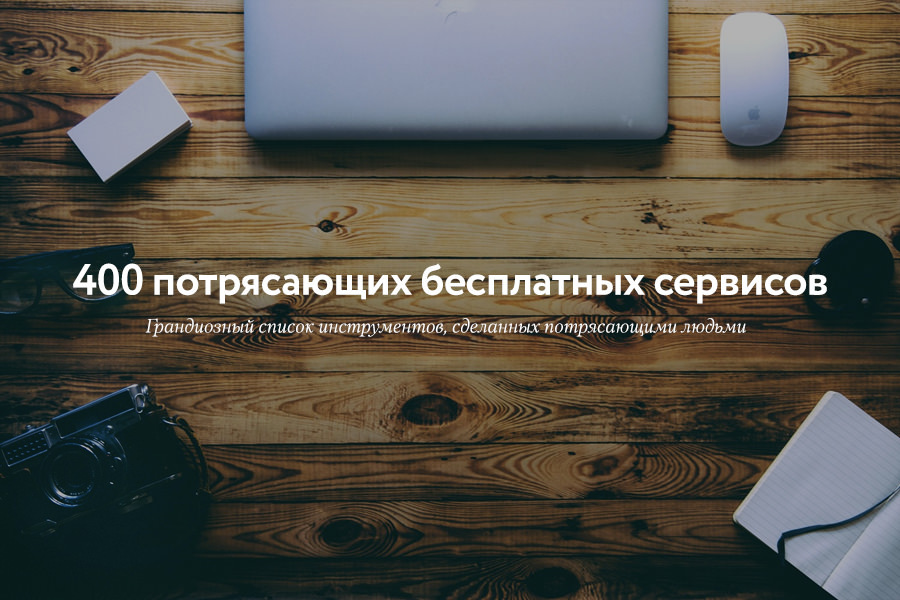

400 потрясающих бесплатных сервисов
Автор оригинала: Ali Mese

Рад представить дополнение оригинального списка из 300 потрясающих бесплатных сервисов. Автор оригинальной статьи Ali Mese добавил ещё +100 новых сервисов, которые помогут найти все — от источников вдохновения и редакторов фотографий до создания опросов и бесплатных иконок.
И еще подборку +500 инструментов от 10 марта 2017 г. смотрите здесь.
A. Бесплатные веб-сайты
B. Бесплатный брендинг и логотип
C. Создание накладных
D. Бесплатные юридические документы
- Kiss: Юридические документы для основателей стартапов и инвесторов (new).
- Docracy: Открытая коллекция бесплатных юридических документов (new).
- Shake: Создавайте, подписывайте и отправляйте соглашения за считанные секунды. Бесплатно для личного использования (new).
E. Управление идеями
- Experiment Board: Протестируйте свою бизнес идею не тратя время и деньги (new).
- Germ.io: Переходите от идеи к исполнению (new).
- Skitch: Высказать свое мнение меньшим количеством слов.
F. Бесплатные генераторы наименований бизнеса/проекта
→ Маркетинг ←
A. Ведение блога
- Hemingway: Приложение Hemingway делает ваши тексты чище и понятнее (англ.).
- Grammarly: Находит и исправляет ошибки в ваших текстах (англ.).
- ZenPen: Минималистичный текстовый редактор.
- Editorial Calendar: Отображение ваших постов в календаре.
- Story Wars: Совместное написание историй.
- Headline Analyzer: Оценка заголовка с точки зрения эмоционального маркетинга (англ.).
- WP Hide Post: Контроль отображения статей в вашем блоге.
- Social Locker: Оплата с помощью твитов, лайков и т.п.
- Egg Timer: Онлайн таймер.
- BlankPage: Удобный сервис для написания текстов (new).
- Wattpad: Крупнейшее в мире сообщество для читателей и писателей (new).
- Known: Сайт для вашего контента (new).
- Dbook: Структурированное и совместное написание больших документов (new).
- CoSchedule: Анализатор заголовков статей (new).
- A5.gg: Когда вы вернетесь, ваш текст все еще будет здесь (new).
- Free Summarizer: Подводите итоги по любому тексту онлайн за несколько секунд (new).
- Medium: Общедоступная платформа для написания историй, статей, идей (new).
B. Поиск интересного контента/идеи
C. Бесплатный SEO + анализ веб-сайтов
D. Бесплатные оптимизаторы изображений
- TinyJPG | TinyPNG Сжимает изображения.
- Compressor.io: Оптимизируйте и сжимайте ваши изображения онлайн (new).
- Kraken: Оптимизация изображение и увеличение скорости работы веб-сайта.
- ImageOptimizer: Изменяет размер, сжимает и оптимизирует ваше изображение.
- ImageOptim: Делает так, чтобы изображения занимали меньше места и быстрее грузились.
- Smush.it: Плагин Wordpress для оптимизации изображений.
- Dunnnk: Красивые макеты (new).
- InstaMockup: Создавайте красивые скриншоты вашего приложения или сайта (new).
E. Бесплатные редакторы изображений
- Canva: Невероятно простое создание элементов графического дизайна для блогеров.
- Pixlr: Надежный фоторедактор в браузере (new).
- Skitch: Высказать свое мнение меньшим количеством слов.
- Easel.ly: Создание мощных инфографик.
- Social Image Resizer Tool: Оптимизация изображения для социальных сетей.
- Placeit: Бесплатные шаблоны и мокапы.
- Recite: Превратите цитату в произведение искусства.
- Meme Generator: Первый онлайн генератор мемов.
- Pablo: Создавайте интересные изображения для ваших социальных сетей за 30 секунд (new).
F. Сборка и отправление email
- Contact form 7: Популярный плагин Wordpress для сбора email адресов.
- Mailchimp: Отправляйте 12,000 писем 2,000 подписчиков бесплатно.
- ManyContactsBar: Бесплатная контактная форма вверху вашего веб-сайта.
- Hello Bar: Получите больше email подписчиков.
- Sumome List Builder: Собирайте email адреса с помощью lightbox окна.
- Scroll Triggered Box: Увеличьте конверсию сайта — только для Wordpress.
- Sumome Scroll Box: Вежливая сборка email адресов.
- Mandrill: Самый быстрый способ доставки почты. 12,000 писем/месяц бесплатно (new).
- Mailgun: Email сервис для разработчиков. 10,000 писем/месяц бесплатно (new).
- Sendgrid: Доставляет вашу транзакционную и маркетинговую почту. 12,000 писем/месяц бесплатно (new).
- Sendinblue: 9,000 писем/месяц бесплатно (new).
- Mailtrack: Отслеживание открытия писем (new).
- Beefree: Бесплатный Email редактор для создания дизайнов (new).
- Canned Emails: Минималистический сайт с готовыми шаблонами писем (new).
G. Бесплатные руководства и курсы (new)
H. Бесплатные социальные медиа + управление сообществами + анкетирование
- WriteRack: Помощь в ведении блога в Twitter.
- Spruce: Оптимизируем изображения для Twitter.
- Click To Tweet: Кликни, чтобы твитнуть.
- MyTweetLinks: Увеличиваем ваш трафик в Twitter.
- Latergram: Планируйте и составляйте график публикаций в Instagram.
- Wordpress Pin it Button for Images: Добавление кнопки “Pin It”.
- SharedCount: Учет лайков, твитов и т.п.
- How Many Shares: Подсчитывайте сколько раз делились URL-адресом в популярных соцсетях (new).
- Justunfollow: Подписывайтесь и отписывайтесь от людей в Twitter и Instagram.
- SocialRank: Идентифицируйте, организуйте и управляйте вашими подписчиками в Twitter.
- Klout: Мгновенно расскажите о статье вашим друзьям с помощью расширения для браузера.
- Ritetag: Мгновенный анализ хештегов.
- Social Analytics: Анализ любой страницы с точки зрения социальных платформ (количество лайков и т.п.).
- Riffle: Полный профиль и информация о любом пользователе Twitter.
- Buffer Free Plan: Планируйте публикации в Twitter, Facebook, Linkedin, Google+.
- Bitly: Создавайте, делитесь и ведите учет коротких ссылок.
- Filament: Создание красивых полосок с кнопками социальных сетей.
- Addthis: Добавление кнопок социальных сетей.
- Sumome Share: Автоматическая оптимизация кнопок «Поделиться».
- Digg Digg: Единый плагин для все кнопок социальных сетей.
- Disqus: Постройте сообщество активный читателей и комментаторов.
- App Review Monitor: Обзоры приложений, которые доставляются на Slack и ваш почтовый ящик (new).
- Presskit Generator: Создавайте Press Kit для вашего приложения iOS (new).
- Free Survey Creator: Создавайте опрос и получайте отзывы пользователей (new).
I. Бесплатная служба поддержки клиентов и создание опросов
- Typeform: Бесплатное онлайн анкетирование и конструктор форм.
- Tally: Мгновенное создание опросов.
- Free Survey Creator: Создавайте опрос и получайте отзывы пользователей бесплатно (new).
- Batch: Первая в мире абсолютно бесплатная платформа для мобильных приложений (new).
- Helprace: Служба поддержки. Бесплатная для 3 агентов небольшой службы поддержки (new).
J. A/B тестирование и инструменты роста
- Petit Hacks: Методика захвата рынка и получения прибыли, используемая на практике.
- Optimizely: Оптимизационная платформа для веб-сайтов и мобильных приложений.
- Hello Bar: Инструмент для A/B тестирования.
- GrowthHackers: Увеличиваем рост.
→ Дизайн + Код ←
A. Источники бесплатных дизайнов
B. Выбор цвета
C. Вдохновение
D. Бесплатные стоковые фотографии
E. Бесплатная типографика
- TypeGenius: Поиск идеальной комбинации шрифтов для вашего проект.
- Font Squirrel: 100% бесплатные коммерческие шрифты.
- FontFaceNinja: Расширение для браузера для отображения шрифтов, которые использует веб-сайт.
- Google Fonts: Бесплатные шрифты, оптимизированные для веб-сайтов.
- Beautiful Web Type: Лучшие примеры использования Google шрифтов.
- DaFont: Коллекция бесплатных шрифтов.
- 1001 Free Fonts: Огромный выбор бесплатных шрифтов.
- FontPark: Самый большой архив бесплатных шрифтов в одном месте.
- Font-to-width: Сжимает тексты в контейнеры определенного размера.
- Adobe Edge Fonts: Бесплатный и легкий способ начать использовать веб-шрифты (new).
- Typekit: Ограниченная коллекция шрифтов для веб-сайтов и приложений (new).
F. Бесплатные иконки
G. Прочие бесплатные инструменты
H. Разработка и программирование
- GitHub: Создадим лучшее программное обеспечение вместе (new).
- BitBucket: Управление кодом Git и Mercurial для IT команд (new).
- Chisel: Предлагает неограниченное количество fossil хранилищ (new).
- Visual Studio: Универсальная коллекция инструментов и услуг для разработчиков (new).
- Landscape: Cистема раннего предупреждения для кодовой базы Python (new).
- Swiftype: Улучшите поисковую систему вашего вебсайта. Бесплатный доступ с ограничениями (new).
- Keen.io: Соберите всю нужную информацию и начните получать ответы на все ваши вопросы (new).
- Coveralls: Исследуйте статистику сайта (new).
- LingoHub: Бесплатно для небольших команд, Open Source и образовательных проектов (new).
- Codacy: Беспрерывный статический анализ для дополнения ваших юнит тестов (new).
- Searchcode: Найдите более 20 миллиардов строк готового кода (new).
- TinyCert: Бесплатные SSL сертификаты для вашего стартапа (new).
- StartSSL: Бесплатные SSL сертификаты (new).
- Opbeat: Первая ops платформа для разработчиков. Бесплатно для маленьких команд (new).
- Pingdom: Мониторинг сайтов. Бесплатно для одного сайта (new).
- Rollbar: Пошаговый мониторинг ошибок приложений на любом языке (new).
- Loggly: Упростите ваш Log Management. Бесплатно для одного пользователя (new).
- Devport: Создайте ваше портфолио разработчика (new).
- Getting Real: Создавайте веб приложения с умом. Бесплатная электронная книга (new).
- Peek: Получите бесплатное 5 минутное видео человека, который использует ваш сайт (new).
- Creator: Создавайте лучшие Ionic приложения (new).
- DevFreeCasts: Огромная коллекция бесплатных скринкастов для разработчиков (new).
- Cody: Бесплатная библиотека HTML, CSS, JS nuggets (new).

→ Работа и продуктивность ←
A. Фоновая музыка для фокусирования на работе
- Noisli: Генератор фоновых шумов.
- Noizio: Спокойные звуки для релакса и продуктивности.
- Defonic: Совмещение различных звуков в мелодию.
- Designers.mx: Плейлисты, собранные дизайнерами для дизайнеров.
- Coffitivity: Трансляция звуков кафе (new).
- Octave: Бесплатная библиотека UI звуков предназначенных для iOS (new).
- Free Sound: Огромная база бесплатных аудио сниппетов/фрагментов, образцов и записей (new).
- Sonics: Бесплатные пакеты UI звуков и звуковых эффектов с доставкой на ваш почтовый ящик каждый месяц (new).
- Deep Focus: Известный плейлист Spotify для концентрации внимания (new).
B. Чтобы не отвлекаться
- Self Control: Mac: бесплатное приложение для того, чтобы избежать отвлекающих веб-сайтов.
- Cold Turkey: Windows: временная блокировка отвлекающих веб-сайтов.
C. Организованность и совместная деятельность
- Trello: Ведет учет чего угодно.
- Evernote: Рабочее пространство для всего.
- Dropbox: Бесплатное пространство вплоть до 2GB.
- Yanado: Управление задачами через Gmail (new).
- Wetransfer: Передача файлов до 10GB.
- Drp.io: Быстрый, бесплатный, безопасный и простой хостинг изображений и файлов.
- Pocket: Чтобы посмотреть позже, положи это в Pocket (карман).
- Raindrop: Удобный сервис для работы с закладками (new).
- Flowdock: Бесплатно для команд из 5 человек и некоммерческих организаций (new).
- Typetalk: Делитесь и обсуждайте идеи с вашей командой используя мгновенные сообщения.
- Slack: Бесплатно для неограниченного числа пользователей с несколькими ограниченными возможностями (new).
- HipChat: Бесплатно для неограниченного числа пользователей с несколькими ограниченными возможностями (new).
- Google Hangouts: Оживите свои разговоры с помощью фото, emoji и групповых видео звонков (new).
- Voveet: Простые и бесплатные 3D звонки. Почувствуйте разницу (new).
- FreeBusy: Избавьтесь от головных болей когда планируете деловую встречу (new).
- RealTimeBoard: Онлайн доска для совместной работы (new).
- Witkit: Надежная платформа для совместной работы, хранения данных. 50GB бесплатного хранения зашифрованных данных (new).
- Any.do: Добивайтесь целей с вашей командой (new).
- Asana: Работа в команде без электронной почты (new).
- GoToMeeting: Онлайн собрания без нервотрепки и суеты (new).
D. Удаленная работа
- Founded X Startup Stats: Найдите лучшую страну для вашего стартапа (new).
- Teleport: Startup Cities: Подбирайте лучшие города для работы или учебы.
- Nomad House: Дома по всему миру для кочевников, где они могут жить и работать вместе.
- Workfrom: Кофе, WiFi и хорошие флюиды (new).
- Lastroom: Координируйте путешествия вашей команды с легкостью (new).
- Nomadlist: Лучшие города для жизни и удаленной работы Nomad House: Дома по всему миру для кочевников, где они могут жить и работать вместе.
- Nomad Jobs: Лучшая удаленная работа в стартапах.
- What’s It Like: Советы, когда лучше путешествовать.
→ Делать открытия и учиться ←
A. Узнавать новые инструменты и стартапы
B. Строить вместе
- Assembly: Создавайте новые идеи совместно с другими людьми.
- CoFoundersLab: Поиск сооснователя стартапа в любом городе, любой индустрии.
- Founder2be: Поиск сооснователя для вашего стартапа.
C. Учиться
D. Полезные email рассылки
E. Полезные инструменты
От переводчика. Со всеми пожеланиями и замечаниями по поводу перевода прошу обращаться ко мне в личку. Спасибо!
Теги:
Хабы: